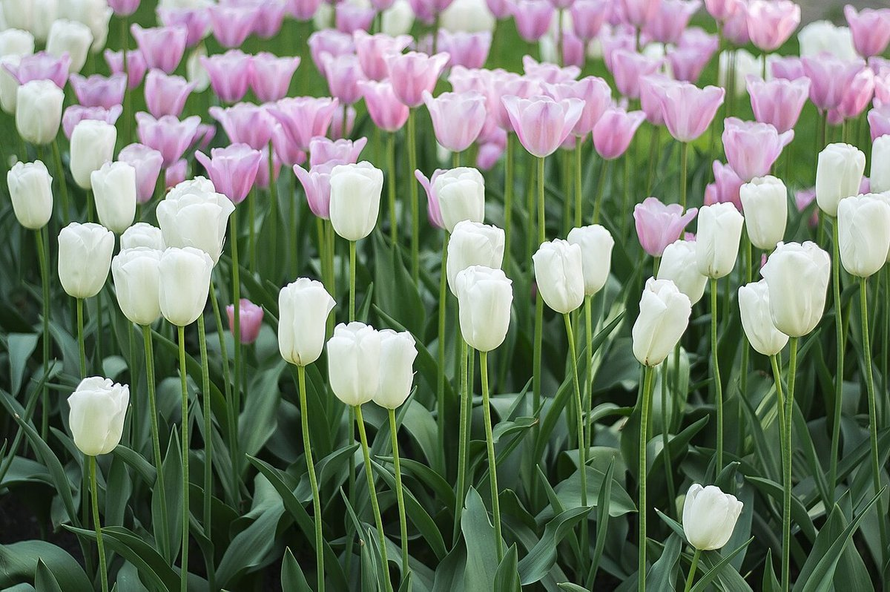

お店について
基本情報
| 店名 | 民家カフェ苺 |
|---|---|
| 住所 | 新潟県燕市八王寺1761 |
| 電話 | 080-4175-5047 |
| ichigo_cafe15 | |
| 営業時間 | 準備中(お問い合わせください) |
| 席数 | 準備中(お問い合わせください) |
| スタッフ | 準備中(お問い合わせください) |
このサイトのコンセプト(制作側の案)
ひと息つく場所の、ひとつ手前の入口
このページのコンセプトは、制作側が考えた案です。お店のご意向ではありません。
情報がまだ少ないことは隠さず、「いまは準備中。詳しくはお電話かInstagramで」と、そのままお伝えするサイトにしました。載せているのは、店名・住所・電話・Instagramの4つだけです。
余白を多くとり、花や空、お茶の写真(イメージ)を添えています。写真はお店の実際の様子ではありません。
お店の理念や歴史、店名の由来などは、確認できていないため記載していません。

お店からのメッセージ
準備中(お問い合わせください)